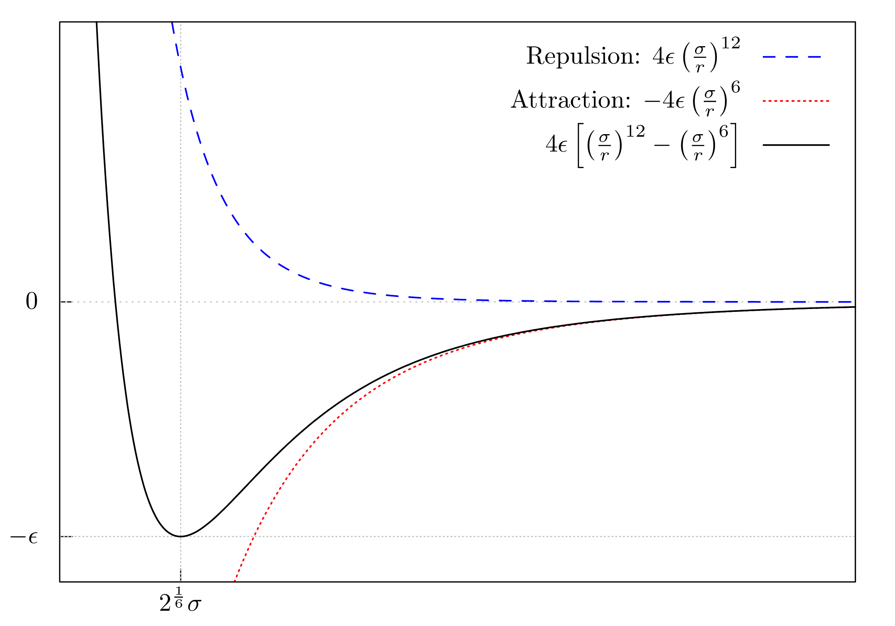

Molecular dynamics simulations are a crucial part of a computational chemist’s tool set 1. They allow for understanding a chemical system with thousands of atoms or molecules. Most importantly, molecular dynamics simulations are capable of describing a system, which changes over time. This allows for understanding properties, e.g. nucleation in the vapor phase 2, which cannot be investigated with other non-dynamic computational methods.
This blog post will teach you how to implement a straightforward molecular dynamics simulation using the programming language Haskell. Additionally, you will learn how to visualize the dynamic behaviour of different systems. For this, we will use the Haskell library gloss.
But before implementing anything, we have to talk about molecular dynamics and the underlying mathematical equations.
In the end of this post, you will be able recreate and interpret the following two simulations.


Set-up
To follow the blog post step by step, you will need the following setup:
Tools/Libraries
molecularDynamics.cabal
name: molecularDynamics
version: 0.1.0.0
homepage: https://github.com/mkDoku/molecularDynamics#readme
license: BSD3
license-file: LICENSE
author: Sascha Bubeck
maintainer: bubecksascha@t-online.de
copyright: 2021 Sascha Bubeck
category: Simulation
build-type: Simple
cabal-version: >=1.10
extra-source-files: README.md
executable molecularDynamics
hs-source-dirs: src
main-is: Main.hs
default-language: Haskell2010
ghc-options: -O2
-threaded
-rtsopts
-with-rtsopts=-N
build-depends: base >= 4.7 && < 5
, linear
, gloss
, random
stack.yaml
resolver: lts-16.6
packages:
Imports in Main.hs
module Main where
import Graphics.Gloss
import Graphics.Gloss.Data.ViewPort
import Linear.Metric
import Linear.V2
import Linear.Vector
import System.Random
-- |
-- Select the main function of your choice
--
-- * 'mainNewton'
-- * 'mainNewtonBounce'
-- * 'mainVerlet'
-- * 'mainVerletSquare'
-- * 'mainVerletRandom'
--
-- to perform the according simulation
main :: IO ()
main = undefinedAlternatively, if you don’t want to copy all the code snippets in this blog post, have a look at this repository. Following the blog post step-by-step should result in a working implementation.
If you are having trouble implementing this, feel free to contact me.
Introduction
In science, numerical simulations are used when it is not possible to derive an analytical solution by solely relying on mathematics. These simulations are performed on system sizes with varying sizes. Depending on the system size, a balance between accuracy and computational demand has to be struck.
Molecular dynamics simulations, a type of numerical simulations, allow to simulate macroscopic systems like liquid and gaseous phases containing millions of particles. The simulations use the equations of classical mechanics (coined by Isaac Newton) to describe the motion of the particles. This is computationally less demanding than for instance the more accurate methods based on quantum mechanical equations.
There are various algorithms to describe the motion of particles numerically. Here, we will use the Velocity Verlet algorithm and the gloss library for visualizing the motion. In addition to the motion, we have to model the interaction between the particles. For this, we will use the Lennard-Jones potential. While modern molecular dynamics programs use additional conditions and refined algorithms, this is the very basis of molecular dynamics simulations.
Classical mechanics
Newton mechanics
Let’s start off with a simple system, in which the particles move independent of each other. This movement can be described by these equations of Newton’s mechanics:
\[ \begin{align*} \vec{r}_{t+\Delta t} &= \vec{r}_t+\vec{v}_t\cdot\Delta t+\frac{1}{2}\vec{a}_t\cdot \Delta t^2 \\ \vec{v}_{t+\Delta t} &= \vec{v}_t + \vec{a}_t \cdot \Delta t \\ \end{align*} \]
Here, for a given position \(\vec{r}\), velocity \(\vec{v}\) and acceleration \(\vec{a}\), we know how a particle will behave after a time step \(\Delta t\). For each time step, both the position \(\vec{r}\) and the velocity \(\vec{v}\) are updated. This update can be repeated over and over again, until the simulation is finished or aborted.
For now, to simplify the description of the particles, we will assume that particles are not accelerated (\(\vec{a} = \vec{0}\)). With this, the above equations can be simplified to:
\[ \begin{align*} \vec{r}_{t+\Delta t} &= \vec{r}_{t}+\vec{v}_t \cdot \Delta t \\ \big( \vec{v}_{t+\Delta t} &= \vec{v}_t \big) \end{align*} \]
Without acceleration, the velocity of the particle is constant throughout the simulation and we do not need to implement the second equation.
With this in mind, let’s start implementing the equation for describing the motion of independent particles. All we need for this, are a time step \(\Delta t\), the current position \(\vec{r}_t\) and velocity \(\vec{v}_t\).
Ready, steady, go!
Definitions and gloss
First, some definitions are needed to follow the implementation.
type Position = V2 Float
type Velocity = V2 Float
type Index = Int
type TimeStep = FloatThe position \(\vec{r}\) and velocity \(\vec{v}\) of the particle is represented by a two-dimensional vector using the linear library. Index is used to enumerate the particles and TimeStep represents the time step \(\Delta t\).
data Particle = Particle
{ idx :: Index,
pos :: Position,
vel :: Velocity
}
instance Eq Particle where
ballA == ballB = idx ballA == idx ballBThe Particle itself consists of Index, Position and Velocity. To make these Particles distinguishable, they are made an instance of Eq. With this, we can check if two particle are the same by comparing their indices.
gloss allows for visualizing the ongoing simulation by providing the function simulate.
simulate :: Display -- Window config
-> Color -- Background color
-> Int -- FPS
-> model -- Model
-> (model -> Picture) -- Draw function
-> (ViewPort -> Float -> model -> model) -- Update function
-> IO ()My understanding is that gloss is designed around the Model-View-Update principle, which I know from the programming language Elm. This principle requires the following inputs: a model for our system, a way to draw it on screen and a way to update the model throughout the simulation. These three essential parts are discussed in the next sections and culminate in our first simulation.
The model
For our model we choose a list of Particles.
type Model = [Particle]This Model has to be initialized in the beginning of the simulation using a custom initialModel function.
initialModel :: Model
initialModel = [Particle 1 (V2 0.0 0.0) (V2 1.0 0.0)]The first system we want to simulate is a single-particle system. Hence, we initialize the Model with a single Particle with an index of 1, a starting position of \(\begin{pmatrix} 0 \\ 0 \end{pmatrix}\) and a starting velocity of \(\begin{pmatrix} 1 \\ 0 \end{pmatrix}\). With this, the Particle starts at the center of the screen and moves to the right, when the simulation is running.
The draw function
Next, we have to specify how to render (draw) the model. For this, we use the drawingFunc function.
drawingFunc :: Model -> Picture
drawingFunc = pictures . fmap drawParticleKeep in mind that Model, provided as input, is a list of Particles ([Particle]). The drawingFunc function first transforms this list of Particles to a list of Pictures. This is done by applying the drawParticle function to every element of the input.
drawParticle :: Particle -> Picture
drawParticle (Particle _ (V2 x y) _) =
translate x' y' $ color (circleSolid $ toPixels dotSize)
where
x' = toPixels x
y' = toPixels y
color = Color (withAlpha 0.8 blue)
toPixels :: Float -> Float
toPixels = (* 100.0)
dotSize :: Float
dotSize = 0.1Here, a blue (blue) circle (circleSolid) is generated and positioned (translate) using the Position (\(x\) and \(y\) coordinates) of the Particle, which was provided to the function as argument. toPixels is needed to transform the Position from “real world units” to pixels, which represent the coordinates on the screen. By applying this function to every element of the Model, all Particles in the simulation are transformed to Pictures.
Next, these Pictures are transformed to a single Picture. This flattening is performed by pictures, a function provided by gloss. The resulting Picture is rendered using the simulate function.
Before seeing this, we have to first discuss the update function to complete the set of functions needed to start a simulation.
The update function
For updating the Model, updateFunc expects a ViewPort, a TimeStep and a Model. In the first simulation step, the Model is provided by initialModel. Then, Model is continuously passed into updateFunc.
updateFunc :: ViewPort -> TimeStep -> Model -> Model
updateFunc _ dt = newton dtWe are not interested in changing the view onto the simulation and hence can ignore the ViewPort argument using _. For simulating the single particle, we will use a custom function called newton.
For the first simulation with only one particle, we can use Newton’s equation of motion:
\[ \begin{equation*} \vec{r}_{t+\Delta t} = \vec{r}_{t}+\vec{v}_t \cdot \Delta t \\ \end{equation*} \]
Again, we need \(\vec{r}_{t}\) and \(\vec{v}_{t}\), so the Position and Velocity of the Particle, to obtain the updated Position \(\vec{r}_{t+\Delta t}\) after a TimeStep of \(\Delta t\). The linear library provides scalar multiplication (e.g., \(\vec{v}_t \textcolor{blue}{\cdot} \Delta t\)) via ^* and vector addition (e.g., \(\vec{r}_t \textcolor{blue}{+} \vec{v}_t \cdot \Delta t\)) via +. Hence, the final newton function can be implemented like this:
newton :: TimeStep -> Particles -> Particles
newton dt [Particle idx pos vel] = [Particle idx pos' vel]
where
pos' = pos + vel ^* dtThe first simulation
Now with all the important functions at hand, let’s finish the first implementation and run it.
mainNewton = simulate windowDisplay white simulationRate initialModel drawingFunc updateFunc
where
initialModel :: Model
initialModel = [Particle 1 (V2 0.0 0.0) (V2 1.0 0.0)]
drawingFunc :: Model -> Picture
drawingFunc = pictures . fmap drawParticle
updateFunc :: ViewPort -> Float -> Model -> Model
updateFunc _ dt = newton dtHere, white is a Color provided by gloss and windowDisplay a simple configuration for the displayed window.
windowDisplay :: Display
windowDisplay = InWindow "MD in Haskell" (800, 800) (200, 800)Running this simulation will result in:

You should see a blue particle moving to the right hand side of the display. gloss comes with some convenient input functionalities: You can change the view by pressing the left mouse button down and moving the mouse. Alternatively, you can use the arrow keys on your keyboard. If you want to zoom in or out, you can use the mouse wheel. Resizing the window is possible, too. Use the Esc button to end the simulation and close the window.
Hitting a wall
Wow, a single Particle! What could come next? You guessed it right, more than one Particle. Before implementing this, we need to ensure that the Particles will stay in a distinct area. Why? Because the Particles will attract and repulse each other in the following simulations. Without any barrier, they would drift apart, which would not be exciting for us to see. To confine the Particles, we can set up some walls. This will result in a so-called simulation box, in which particles will bounce off the wall.
For this, there is only little we have to change in the above code. The first change will be to check whether or not the particle is going to leave the simulation box using boundaryCondition.
boundaryCondition :: Particle -> V2 Float
boundaryCondition (Particle _ (V2 x y) _)
| (x' > aLength/2) && (y' > bLength/2) = V2 (-1) (-1)
| x' > aLength/2 = V2 (-1) 1
| y' > bLength/2 = V2 1 (-1)
| otherwise = V2 1 1
where
x' = abs x + dotSize
y' = abs y + dotSize
aLength, bLength :: Float
aLength = 7.0
bLength = 7.0Here, aLenght and bLength are the dimensions of the simulation box in \(x\) and \(y\) direction, respectively. boundaryCondition returns a vector, which is used to modify the Velocity in the updated newton function, so that the Velocity flips direction, when hitting a wall.
newtonBounce :: Float -> Particles -> Particles
newtonBounce dt [particle@(Particle idx pos vel)] = [Particle idx pos' vel']
where
transVec = boundaryCondition particle
vel' = transVec * vel
pos' = pos + vel' ^* dtHere, it is important to keep in mind, that the change in direction is done before modifying the Position of the Particle. This ensures that the Particle does not leave the simulation box under any circumstances. Unfortunately, this also means that the wall will never be touched. However, the distance between Particle and wall will be so small, that we cannot see this “error”.
Speaking of seeing, if we want to visualize the walls, we have to update the drawingFunc in our implementation.
drawingFunc :: Model -> Picture
drawingFunc = pictures . (:) drawWalls . fmap drawParticleHere, we append the result of the drawWalls function to the list of Picture before flattening the list of Picture to be drawn.
drawWalls :: Picture
drawWalls = lineLoop $ rectanglePath (toPixels aLength) (toPixels bLength)This function just draws a rectangle using the dimensions of the simulation box, after converting them to pixels.
With these modification the resulting simulation will look like this:

Here, the blue Particle is moving to the right and will bounce off the right wall. Exactly as we intended it to be!
Let’s get some more particles into this party
The Velocity Verlet algorithm
Until now, we have only described the motion of a single particle. For multiple particles, we need another approach. One approach to solve the equations of motion for many (more than one) classical particles is the Velocity Verlet algorithm. In this algorithm, all forces between all particles are calculated in a pairwise manner and then used to determine the acceleration on these particles using:
\[ \vec{F} = m \vec{a} \qquad \Leftrightarrow \qquad \vec{a} = \frac{\vec{F}}{m} \]
After determining the acceleration on each particle, the position is updated accordingly. Then, all forces are reevaluated at the new positions and combined with the forces in the previous time step. These combined forces are then used to update the velocity of all particles. This is a single full update of the Position and Velocity of all Particles.
For a set of particles with mass \(m\) and a simulations time step \(\Delta t\), the algorithm can be summed up by these steps:
\[\begin{align*} \{\vec{F}_t\} & \leftarrow \text{calcForces}\; \{(\vec{r}_t, \vec{v}_t)\} \\ \{\vec{a}_t\} & \leftarrow \frac{\{\vec{F}_t\}}{m} \\ \{(\vec{r}_{t+\Delta t}, \vec{v}_t)\} & \leftarrow \text{updatePositions}\; \Delta t \; \{(\vec{r}_t, \vec{v}_t) \} \; \{\vec{a}_t\} \\ \{\vec{F}_{t+\Delta t} \} & \leftarrow \text{calcForces} \; \{(\vec{r}_{t+\Delta t}, \vec{v}_t) \} \\ \{\vec{a}_{t+\Delta t}\} & \leftarrow \frac{\{\vec{F}_{t+\Delta t}\}}{m} \\ \{\vec{a}_+\} & \leftarrow \{(\vec{a}_t + \vec{a}_{t+\Delta t})\} \\ \{(\vec{r}_{t+\Delta t}, \vec{v}_{t+\Delta t})\} & \leftarrow \text{updateVelocities} \; \Delta t \; \{(\vec{r}_{t+\Delta t}, \vec{v}_t)\} \; \{\vec{a}_+\} \\ \end{align*}\]
Here, curly brackets (\(\{\}\)) indicate a list of the respective content, e.g. \({\{\vec{F}_t\}}\) is a list of two-dimensional force vectors \(\vec{F}_t\) at the current time \(t\). Each list entry represents a force acting on a Particle.
\((\vec{r}_t,\vec{v}_t)\) represents Position and Velocity of a Particle.
Let’s use the above formula to write some Haskell code. For this, the force \(\vec{F}\) and acceleration vectors \(\vec{a}\) are represented by V2 Float, as we already did for Position and Velocity.
type Force = V2 Float
type Acceleration = V2 Float
verletStep :: TimeStep -> Model -> Model
verletStep dt particles =
let
oldF = calcForces particles
oldA = fmap (^/ m) oldF
newPos = updatePositions dt particles oldA
newF = calcForces newPos
newA = fmap (^/ m) newF
addedF = oldA ^+^ newA
newParts = updateVelocities dt newPos addedF
in newPartsIn this implementation, all operations are performed with respect to a list of Particles. This means, that the first entry in the Force list represents the Force acting on the first Particle. The same is true for the acceleration and updated lists of Particles. For working with these lists of V2 Float we use the library linear once again. For dividing a list of Force by a mass m, fmap (^/ m) can be used. Here, ^/ m is the scalar division (e.g., \(\color{blue}{\frac{\textcolor{black}{\vec{F}_t}}{m}}\)), while ^+^ is the addition of elements from two lists into a new list (e.g., \(\{\textcolor{blue}{(}\vec{a}_t \textcolor{blue}{+} \vec{a}_{t+\Delta t}\textcolor{blue}{)}\}\) ).
Acceleration enters the room
Because there is more than one particle in the simulation, there will be forces between these particles and thus they will be accelerated. Hence, we have to use other equations of motion to describe the particles - now considering the acceleration.
The equation for updating the Position of a particle is:
\[ \begin{equation*} \vec{r}_{t+\Delta t} = \vec{r}_t+\vec{v}_t\cdot\Delta t+\frac{1}{2}\vec{a}_t\cdot \Delta t^2 \\ \end{equation*} \]
and can be implemented as
updatePosition :: TimeStep -> Particle -> Acceleration -> Particle
updatePosition dt (Particle idx pos vel) acc = Particle idx newPos vel
where
newPos = pos ^+^ velPart ^+^ accPart
velPart = vel ^* dt
accPart = acc ^* (0.5 * dt**2)In the Velocity Verlet algorithm, the update of the Velocity looks like this:
\[ \begin{equation*} \vec{v}_{t+\Delta t} = \vec{v}_t + \frac{1}{2} \cdot \Delta t \cdot \vec{a}_+ \end{equation*} \]
Here, \(\{\vec{a}_+\}\) is \(\{(\vec{a}_t + \vec{a}_{t + \Delta t})\}\), which means that we combine the acceleration at time \(t\) (current time) and time \(t+\Delta t\) (next time step) as described in the Velocity Verlet algorithm.
This equation for updating the Velocity of all Particles can be implemented as follows:
updateVelocity :: TimeStep -> Particle -> Acceleration -> Particle
updateVelocity dt particle acc = Particle idx pos vel'
where
(Particle idx pos vel) = particle
transVec = boundaryCondition particle
vel' = transVec * (vel + (0.5 * dt) *^ acc)The above two equations are used to update the Position and Velocity of a single particle , respectively. To make these functions applicable for multiple Particles, we can use zipWith:
updatePositions, updateVelocities :: TimeStep -> [Particle] -> [Force] -> [Particle]
updatePositions dt = zipWith (updatePosition dt)
updateVelocities dt = zipWith (updateVelocity dt)Now, given a list of Particles and a list of Forces, we can update the Positions and Velocitys of the Particles according to the Velocity Verlet algorithm. The only function missing is the calcForces function. For this function, we have to assume a interaction between the Particles. In this blog post, we will use the Lennard-Jones potential for this.
The Lennard-Jones potential
The Lennard-Jones potential is one of the most commonly used interaction potentials in molecular dynamics simulations. It describes the interaction of two particles, which are separated by a distance \(r\).
\[ V_{\text{LJ}} = 4 \epsilon \left[\left(\frac{\sigma}{r}\right)^{12} - \left(\frac{\sigma}{r}\right)^6\right] \]
This equation consists of two terms. The first term \(\big( \frac{\sigma}{r} \big)^{12}\) describes the repulsion, the second term \(- \big( \frac{\sigma}{r} \big)^{6}\) the attraction of the two particles.
This can be visualized by plotting the potential:

For small distances (\(r\)), the repulsive term will dominate and the particles will be forced apart. With increasing distance, the repulsive force declines, while the attractive force becomes more dominant. This means that when the particles are far apart they start attracting each other. The interplay of the two opposing forces results in a so-called equilibrium distance (at \(2^{1/6} \sigma\)), where the repulsion and attraction are in balance. At this distance, the two particles possess the smallest energy. Deviating from this distance will result in a higher energy of the system and the particles will attract or repulse each other in order to return to this equilibrium distance.
In addition to the distance \(r\), the Lennard-Jones potential is determined by the parameters \(\epsilon\) and \(\sigma\), which specify the depth and the position of the minimum of the potential, respectively. These two parameters are Particle-dependent, i.e. argon atoms have other parameters than mercury atoms. This is where the chemistry comes into play. For each element, there are different values and for molecules there are other sets of parameters to simulate their behaviour. In this blog post, we perform a single-atom simulation for argon (\(m\) = 18 \(u\), \(\epsilon = 12.57\), \(\sigma = 0.335\)).
Note: The \(\epsilon\) value was chosen to be ten times smaller than the literature value of \(\epsilon = 125.7\) 3 4 to avoid numerical errors in the simulation. Another way to avoid numerical problems is to make the time step \(\Delta t\) smaller.
With the interaction potential at hand we can calculate the resulting Force, which acts on one particle (indexed by \(i\)). This is done by the following pairwise sum:
\[ \vec{F}_{i} = \sum_{i \neq j} 4 \epsilon \left[\frac{12\sigma^{12}}{r_{ij}^{14}} - \frac{6\sigma^{6}}{r_{ij}^{8}}\right] \cdot \vec{r}_{ij} \]
Here \(\vec{r}_{ij}\) is the distance between two Particles (\(\vec{r}_i - \vec{r}_j\)), while \(r_{ij}\) (not a vector) is the Euclidean distance of the \(\vec{r}_{ij}\) vector. Another name for the Euclidean distance is norm, which is implemented in linear as norm.
Finally, we can implement a function, which calculates the Forces between all Particles. We break this task into smaller pieces and start by implementing a function for calculating the Force between two Particles.
calcForceBetween :: Particle -> Particle -> Force
calcForceBetween particleA particleB
| particleA == particleB = V2 0.0 0.0
| otherwise = rep - att
where
rep = repulsion posA posB
att = attraction posA posB
posA = pos particleA
posB = pos particleBImportantly, a particle cannot interact with itself, designated as \(i \neq j\) constraint in the above sum. From a physical standpoint, this makes a lot of sense, because how would a Particle interact with itself? But also mathematically self-interaction is not possible: all terms in the equation are proportional to \(\frac{1}{r}\). If we would calculate the self-interaction, we would have to divide by \(0\) and that is not defined.
In the above code, we avoid this self-interaction by checking whether the two Particles are the same. If this is the case, the vector \(\begin{pmatrix} 0 \\ 0 \end{pmatrix}\) is returned and no resulting force will act on the Particle.
If the Particles are not the same, the repulsion and attraction terms are of the pairwise Lennard-Jones potential are calculated, resulting in a Force vector.
repulsion and attraction are implemented as follows:
sigma6 = sigma**6
sigma12 = sigma**12
repulsion, attraction :: Position -> Position -> Force
repulsion posA posB = (epsilon * 48.0 * sigma12 / divisor ) *^ r
where
divisor = (norm r)^14
r = posB ^-^ posA
attraction posA posB = (epsilon * 24.0 * sigma6 / divisor ) *^ r
where
divisor = (norm r)^8
r = posB ^-^ posAWith the function to calculate the Force between two Particles at hand, we can implement one function to calculate the Forces between one and all other Particles and use that to calculate all Forces between all Particles:
calcForceOnOne :: Particle -> [Particle] -> [Force]
calcForceOnOne particle = fmap (calcForceBetween particle)
calcForceAcc :: [Particle] -> [Particle] -> [Force]
calcForceAcc [particle] particles = calcForceOnOne particle particles
calcForceAcc (p:articles) particles = calcForceOnOne p particles
^+^ calcForceAcc articles particlesThis leads to the implementation of calcForces, which we need for the simulations.
calcForces :: [Particle] -> [Force]
calcForces particles = calcForceAcc particles particlescalcForces takes two lists of Particles and loops through the first list to calculate all Forces on all Particles using the second unmodified list. With this, we have completed the implementation of the Velocity Verlet algorithm. Yeah!
Running Velocity Verlet simulations
That is a lot to digest. Now, it’s time to bring the algorithm to life. We will focus on how to generate different start geometries (Model) for the simulations. Let’s start with the smallest many-Particle system imaginable, the two-Particle system.
It takes two to tango
With the fully implemented verletStep function at hand, the implementation of the two-Particle system looks like this:
mainVerlet :: IO ()
mainVerlet = simulate windowDisplay white simulationRate initialModel drawingFunc updateFunc
where
initialModel :: Model
initialModel = [ Particle 1 (V2 0.3 0.0) (V2 0.0 0.0)
, Particle 2 (V2 (-0.3) 0.0) (V2 0.0 0.0) ]
drawingFunc :: Model -> Picture
drawingFunc = pictures . (:) drawWalls . fmap drawParticle
updateFunc :: ViewPort -> Float -> Model -> Model
updateFunc _ dt = verletStep dtComparing this simulation with the previous one, there are two differences: Instead of newton, we use the verletStep function and the initialModel is different. In the current initialModel, we place two Particles separated by a distance of 0.6 on the \(x\)-axis. Both Particles are at rest at the beginning of the simulation.
Running the simulation will result in two Particles attracting and repulsing each other:

First, the two Particles attract each other, moving to the center of mass. When the distance between both becomes small, they repulse each other.
Lettuce. No, I mean lattice!
Now that the simulation is running for two Particles, it would be nice to set up simulations with more Particles. Doing this “by hand” is quite cumbersome. Instead, we can use the following function to place the Particles on a \(n \times n\) square lattice:
squareLatticeModel :: Int -> [Particle]
squareLatticeModel n = zipWith3 Particle idxs poss vels
where
idxs = [1..(n^2)]
poss = squareLattice n n
vels = replicate (n^2) (V2 0.0 0.0)Here, we generate \(n^2\) Indexs and Velocitys. In this example all Velocitys are set to be \(0\). squareLattice is a recursive function, which places \(n\) columns of \(n\) Particles per row inside the simulation box.
squareLattice :: Int -> Int -> [Position]
squareLattice _ 0 = []
squareLattice dim acc = latticeRow dim dim yPos ++ squareLattice dim (acc-1)
where
dy = bLength / fromIntegral (dim+1)
yPos = bLength/2 - (fromIntegral acc * dy)latticeRow :: Int -> Int -> Float -> [Position]
latticeRow _ 0 _ = []
latticeRow dim acc yPos = V2 xPos yPos : latticeRow dim (acc-1) yPos
where
dx = aLength / fromIntegral (dim+1)
xPos = aLength/2 - (fromIntegral acc * dx)Now let’s use squareLatticeModel to run a simulation with \(4 \times 4\) Particles.
mainVerletSquare :: IO ()
mainVerletSquare = simulate windowDisplay white simulationRate initialModel drawingFunc updateFunc
where
initialModel :: Model
initialModel = squareLatticeModel 4
drawingFunc :: Model -> Picture
drawingFunc = pictures . (:) drawWalls . fmap drawParticle
updateFunc :: ViewPort -> Float -> Model -> Model
updateFunc _ dt = verletStep dt
In the beginning of the simulation, all Particles are at rest for some time. During this period, the Forces acting on the Particles gradually increase until the Particles start moving As you might notice, there is a certain symmetry in this movement, which gets lost after some time due to numeric instabilities of floating-point arithmetics. Nevertheless, the simulation allows for some qualitative observations regarding the phase transition of the argon atoms: A single large cluster indicates that the argon atoms form a single liquid phase. In contrast, multiple clusters indicate nucleation, the process of forming droplets during the transition between gaseous and liquid phase 5 6. When all argon atom are separate from one another (no clusters), they would be in the gaseous phase.
Chaos is a friend of mine
As a bonus, I would like to show you an alternative to the square lattice for initializing Particles: using a pseudo-random number generator from random. For this, we need to modify the implementation of the main function by adding a new Model and a seed for the pseudo-random number generator:
mainVerletRandom :: IO ()
mainVerletRandom = do
seed <- newStdGen
simulate windowDisplay white simulationRate (initialModel seed) drawingFunc updateFunc
where
initialModel :: RandomGen g => g -> Model
initialModel = modelRandom 16
drawingFunc :: Model -> Picture
drawingFunc = pictures . (:) drawWalls . fmap drawParticle
updateFunc :: ViewPort -> Float -> Model -> Model
updateFunc _ dt = verletStep dtHere, the seed is generated using the newStdGen function. This seed is then passed to initialModel as an argument. This will ensure that each time we run the program, a different starting configuration is generated.
After that, the modelRandom function can be implemented like this:
modelRandom :: RandomGen g => Int -> g -> [Particle]
modelRandom n g = zipWith3 Particle idxs poss vels
where
idxs = [1..n]
(g', g'') = split g
poss = randomPos n g'
vels = randomVel n g''Here, \(n\) Indexs, Positions and Velocitys are generated. The latter two, however, are generated randomly using the seed. Generating random Velocity values via randomVel is done using randomRs, which is kind of magical.
randomVel :: RandomGen g => Int -> g -> [Velocity]
randomVel n g = take n $ randomRs ( -0.2, 0.2 ) g :: [Velocity]Passing a range ((-0.2, 0.2)) and a return type ([Velocity]), randomRs will generate a infinite stream of randomly generated Velocitys. Keep in mind, that it was not needed to specify that Velocity has two entries (it is still a V2 Float after all). From this stream of randomly generated Velocitys, we take \(n\) values.
For generating random Positions, the story is a bit different, because the range for the \(x\) and \(y\) values depends on the dimensions of the simulation box (aLength and bLength). Hence, genPos is a bit more verbose.
genPos :: RandomGen g => g -> (Position, g)
genPos g = (pos, g'')
where
(xGen, g') = randomR ( -aLengthHalf, aLengthHalf ) g
(yGen, g'') = randomR ( -bLengthHalf, bLengthHalf ) g'
pos = V2 xGen yGen
aLengthHalf = aLength / 2 - dotSize
bLengthHalf = bLength / 2 - dotSizeHere, the seed of the pseudo-random number generator (g) is passed to the first generator, which returns a random value for the \(x\) dimension (xGen), but also a new generator g', which is then used for the random value in the \(y\) dimension. And with this at hand, we can run the simulation.
A word of warning: Sometimes, when starting this kind of simulation, you might see multiple Particles located very close to each other. This will result in some numerical errors, due to the \(\frac{1}{r}\) behaviour of the Lennard-Jones potential. In this case, the simulation will “crash” by removing all the Particles from the simulation box.
Such simulations using randomly initialized Particles are more exciting, because every simulation run is different. In contrast, square lattice simulations are always the same for the same number of Particles. However, the square lattice approach is the one that is used in real-world molecular dynamics simulations. There, the starting geometry resembles a cube instead of a lattice, because it is performed in three dimensional space.
Summary and Outlook
Let’s recap what we achieved in this blog post: we implemented a molecular dynamics simulation of argon atoms using the Velocity Verlet algorithm and the Lennard-Jones potential. We also explored different ways of initializing the particles and visualized the simulations using the gloss library.
The implemented simulations are for educational purposes only. For a “real-world” quantitative simulation, these implementations would need to be extended. First, a so-called thermostat 7 would need to be added to measure and adjust the temperature inside the simulation box. Second, the boundary condition of solid walls are conceptually flawed; periodic boundary conditions are the way to go, but would require the use of so-called Verlet lists 8. Third and most importantly, we did not measure anything during the simulation. So a logger for physical properties of interest during the simulation would need to be implemented as well.
Performance-wise there is also a lot do to. For starters, in real-world molecular dynamics simulation, e.g. LAMMPS and MOSCITO, the visualization and simulation are decoupled, because it is more efficient to run the whole simulation (which could take days or weeks) while dumping important information (positions, velocities, etc.) into files. These so-called snapshots can be visualized after the simulation using separate tools, e.g. VMD.
This blog post is an introduction into the fascinating world of molecular dynamics simulations. You now have some basic tools at hand to run your own simulations. Have fun simulating and see you next time.
Give me your opinion
Feel free to discuss with me and other people at:
References
Cramer, C. J. Essentials of Computational Chemistry: Theories and Models 2nd ed. (John Wiley & Sons, Ltd, 2004).↩︎
Yasuoka, K & Matsumoto, M. Molecular dynamics of homogeneous nucleation in the vapor phase. II. Water. J. Chem. Phys. 109, 8463 (1998).↩︎
White, J. A., Lennard-Jones as a model for argon and test of extended renormalization group calculations J. Chem. Phys. 111, 9352 (1999).↩︎
Yasuoka, K & Matsumoto, M. Molecular dynamics of homogeneous nucleation in the vapor phase. II. Water. J. Chem. Phys. 109, 8463 (1998).↩︎
Frenkel, D. & Smit, B. Understanding Molecular Simulation: From Algorithms to Applications 2nd ed. (Academic Press, 2001).↩︎
Hünenberger, P. in Advanced Computer Simulation (eds Dr. Holm, C. and Prof. Dr. Kremer, K.) 105–149 (Springer Berlin Heidelberg, 2005).↩︎
Frenkel, D. & Smit, B. Understanding Molecular Simulation: From Algorithms to Applications 2nd ed. (Academic Press, 2001).↩︎